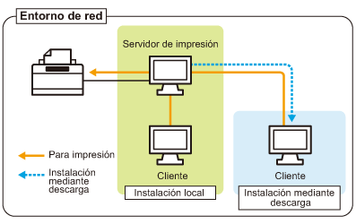

Si utiliza la impresora en el entorno de servidor de impresión, podrá realizar la impresión desde otros ordenadores (clientes) que no estén conectados directamente a la impresora.
 |
El ordenador conectado directamente a la impresora se denomina "servidor de impresión" y los demás ordenadores que utilizan la impresora a través del servidor de impresión se llaman "clientes".
|

Asimismo, si configura el servidor de impresión, podrá administrar la impresora de un modo eficaz de la manera siguiente.
Podrá administrar todos los trabajos de los clientes en el servidor de impresión.
Los clientes podrán descargar e instalar el controlador de impresora desde el servidor de impresión (no será necesario el CD-ROM).
Si desea utilizar la impresora en el entorno de servidor de impresión, lleve a cabo cualquiera de las siguientes tareas.
Si su ordenador es el servidor de impresión
|
1.
|
Instale el controlador de impresora.
|
||
|
2.
|
Configure el servidor de impresión.
|
Si su ordenador es un ordenador cliente
Instale el controlador de impresora.
Existen dos formas de instalar el controlador de impresora en los ordenadores clientes: instalación local e instalación mediante descarga.
<Instalación local>
Podrá instalar el controlador de impresora utilizando el CD-ROM suministrado.
<Instalación mediante descarga>
Podrá instalar el controlador de impresora sin utilizar el CD-ROM suministrado sino descargándolo del servidor de impresión. Existen los dos modos siguientes para descargar e instalar el controlador de impresora.
|
NOTA
|
||
|
Precauciones al descargar e instalar el controlador de impresora
Si se está ejecutando un sistema operativo de 64 bits en el servidor de impresión, no se admitirá la instalación mediante descarga para un ordenador cliente en el que se esté ejecutando cualquiera de los siguientes sistemas operativos de 32 bits debido a la restricción de Windows.
Windows 2000
Windows XP (en el cual no haya instalado ningún service pack o SP1)
Windows Server 2003 (en el cual no haya instalado ningún service pack)
|